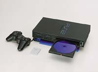

Las patentes de software sólo benefician a las grandes empresas.

Lanzamiento:
Precio:
| Ya está aquí la relativamente aclamada Playstation 2, la  maravillosa (y cara) consola que todos los fans de la primera Playstation estan esperando. Es cierto que la consola no saldrá baratita precisamente, pues con la compatibilidad para ver peliculas en DVD-ROM se ha disparado el precio de la consola hasta ni más ni menos que 74.900 ptas, aunque en Inglaterra, por ejemplo, haciendo en cambio les sale a unas 79.000 ptas, que es peor. Que la consola es cara es una realidad, pero lo que Sony pretende no es hacer una simple consola, no, lo que quiere es que sea como un electrodoméstico (no!, no llevará lavavajillas), un aparato imprescindible en el hogar que no sólo servirá para jugar, sinó que será completamente multimedia. Con esta política, Sony pretende llegar a todos los hogares, pues con la excusa de que tambien se verán peliculas DVD y se pueden escuchar CDs quizá muchos padres (o en general consumidores adultos) se apunten. En cuanto a puntos negativos, por parte de los consumidores se le atribuye el precio, por el cual no será accesible a muchos hogares. Y por parte de los programadores se le inculpa de una muy difícil programación que hace más costosa en todos los sentidos la producción de un juego. |